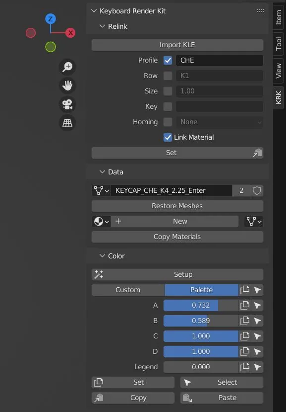
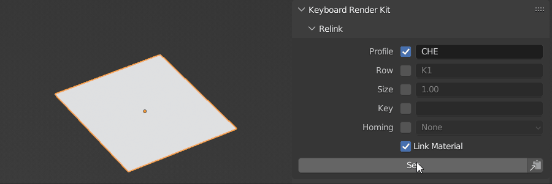
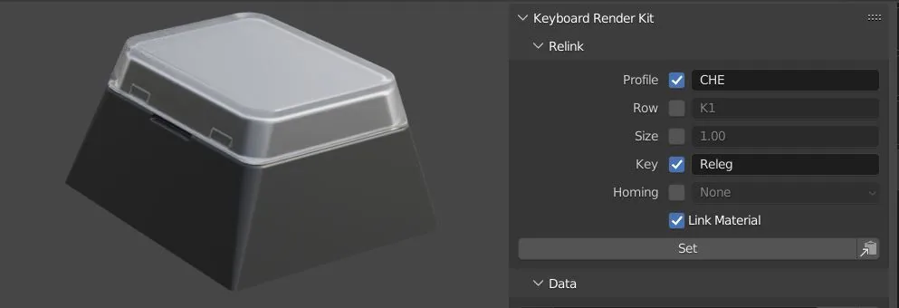
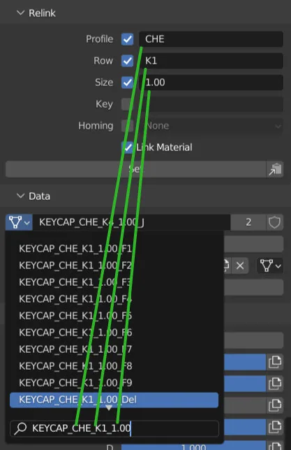

KRKパネル#

KRKパネルはサイドバー（Nキーで表示）にあり、Relink、Data、Color、Propertiesの4つのエリアに分かれています。最後の2つのエリアは、対応するプロパティが利用可能な場合にのみ表示されます。
Relink（再リンク）#
Relinkはオブジェクトデータマネージャーで、キーキャップの高さ（プロファイル）、行、サイズ、キータイプ、ホーミングキーを素早く切り替えるために使用します。チェックボックスにチェックが入っているオプションは、Setを押すとすべて適用されます。
KLEのインポート#
KRKはKeyboard Layout EditorのJSONファイルをインポートできます。KLEはオブジェクトに名前を付けないため、インポーターはキーキャップの刻印と行（K1-K6）からキーを推測し、推測できる箇所にはプレースホルダーを配置します。このKLEをサンプルとして使用するか、これをベースに独自の配列を作成できます：
http://www.keyboard-layout-editor.com/#/gists/f7528ebe1348daab7abc45bc2f662c8a
Profile（高さ）#

利用可能な高さとそのプレフィックスはアウトライナーのProfileコレクションにあります。行やその他のオプションは何度か使えば感覚がつかめます。オプションを対応する入力欄に入力し（大文字小文字を区別）、チェックボックスにチェックを入れてSetを押すと適用されます。
Row（行）#

メーカーやキーキャップのプロファイルによって行番号の体系が異なるため、KRKは独自の番号体系を導入しています。キーボード上の実際の位置に基づき、キーボードの最も奥（手前から最も遠い列）から数えます。
高さ |
オプション |
行 |
オプション |
|---|---|---|---|
KRK |
0 |
1-2-3-4-5-6 |
7 |
Cherry |
0 |
1-1-2-3-4-4 |
5 |
DCS |
5 |
1-1-2-3-4-4 |
|
DSA |
Uniform |
||
DSS |
1-1-2-3-4-3 |
4 |
|
KAM |
Uniform |
||
KAT |
5 |
4-4-3-2-1-1 |
|
OEM |
1-1-2-3-4-4 |
||
SA |
1-1-2-3-4-3 |
4 |
一部の高さでは、最初の行または最後の行、あるいはその両方を入れ替えることができます。
（表中のUniformはすべての行が同じ高さであることを示し、そのまま入力する必要があります。）
Size（サイズ）#

入力欄に4文字のサイズ単位（unit size）を入力するとキーキャップのサイズを変更できます。対象のジオメトリが存在する限り、キーキャップは指定したサイズになります。
Key（キー）#

入力欄にキーキャップ名を入力すると、キーキャップを別のものに交換できます。文字入れ替え可能なキーキャップ（Releg）、無刻印キーキャップ（Blank）、ウィンドウ付きキーキャップ（*_WIN）に交換したいときに特に便利です。
Homing（ホーミングキー）#

このドロップダウンメニューでホーミングキーのタイプをバー／ナブ／スクープ（bar/nub/scoop）から切り替え、Setを押します。
Link Material（マテリアルをリンク）#
Link Materialは、現在適用されているマテリアルを対象のオブジェクトデータに引き継ぐことができます。有効にするか無効にするかは求める結果によります。例えばプレースホルダーの高さ（PLA）に交換する場合は、Capsmatもプレースホルダーに引き継がれないよう、無効にするべきです。
Copy Settings（設定をコピー）#

Setボタンの右側にあるCopy Settingsは、オブジェクトデータ名をオブジェクトデータドロップダウンメニューにコピーし、特定のキーを探しやすくします。
以下のエリアは、現在アクティブ（ハイライト）のオブジェクトに対応するオプションのみを表示します。
Data（データ）#
Dataはプロパティパネルのオブジェクトデータとマテリアル割り当てをここに移動し、より簡単にアクセスできるようにします。
ここではオブジェクトデータを素早く検索し、現在のものを別のものに交換できます。例えばキーキャップを複製またはインスタンス化し、そのコピーをスイッチやスタビライザーに変更できます。

キーキャップが複製、インポート、貼り付けによって再リンクできなくなった場合、Restore Meshesを使うとファイル内の同名のバージョンと再接続できます。インポートした方を基準にしたい場合は、そのオブジェクトデータの名前を変更し、末尾の.001を削除してください。

Restore Collectionsはコレクションアセットを選択した場合にのみ表示され、編集可能な状態に復元するために使用します。

ここにあるCopyは、現在アクティブなキーキャップのマテリアルを他の選択中のすべてのキーキャップにリンクし、キーキャップ以外のオブジェクトは無視します。

Color（カラー）#
Colorは色とパレットの管理システムで、Capsmat内の色関連のプロパティを制御するのに役立ち、色プロパティが利用可能な場合にのみ表示されます。 選択したキーキャップに色プロパティがない場合はSetupボタンが表示され、そのキーキャップに必要なすべてのプロパティを追加できます。

Custom/Paletteスイッチで、カスタムカラーとパレットの2つのワークフローを切り替えられます。カラーA-EとパレットスライダーA-Eはパレットノードグループを通じて、Capsmatのこれらの部分をオブジェクトごとに制御できます。選択後Setを押すと選択中のすべてのキーキャップに適用されます。各コピーボタンを押せば、一度に1項目だけコピーすることもできます。下部のCopyとPasteは、選択中のすべてのオブジェクトに対してオプションの記録を作成し呼び出すために使用します。

Properties（プロパティ）#
Propertiesも同様にカスタムプロパティが利用可能な場合にのみ表示されます。USBケーブルを選択するとケーブルのオプション（編組／TechFlexやコネクタの熱収縮チューブの色など）が表示され、デスクマットを選択するとサイズと縁取り（エッジ）のオプションが表示されます。